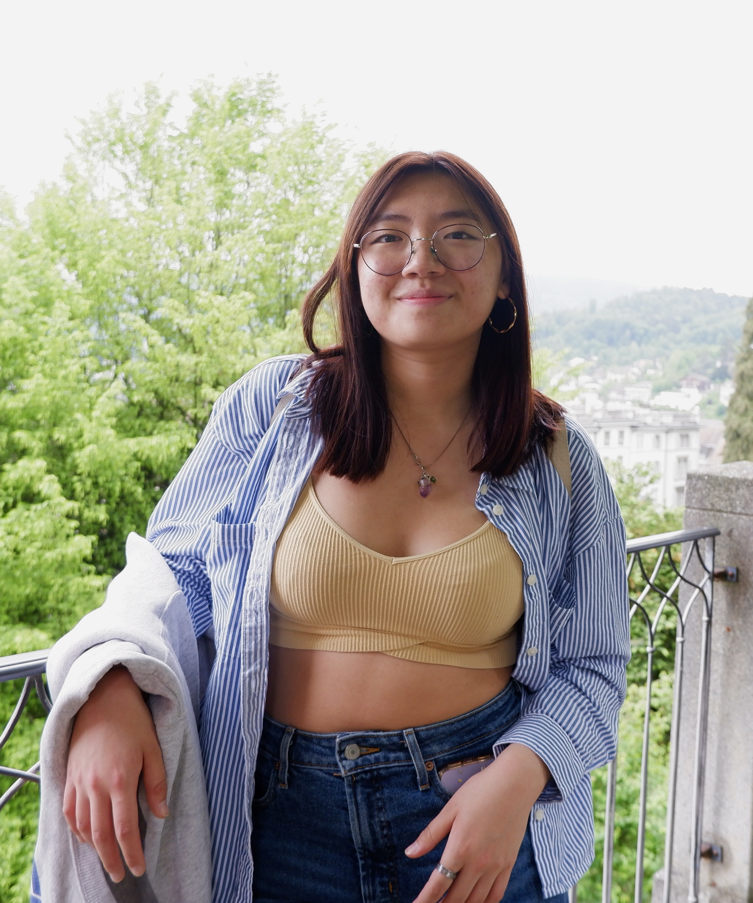
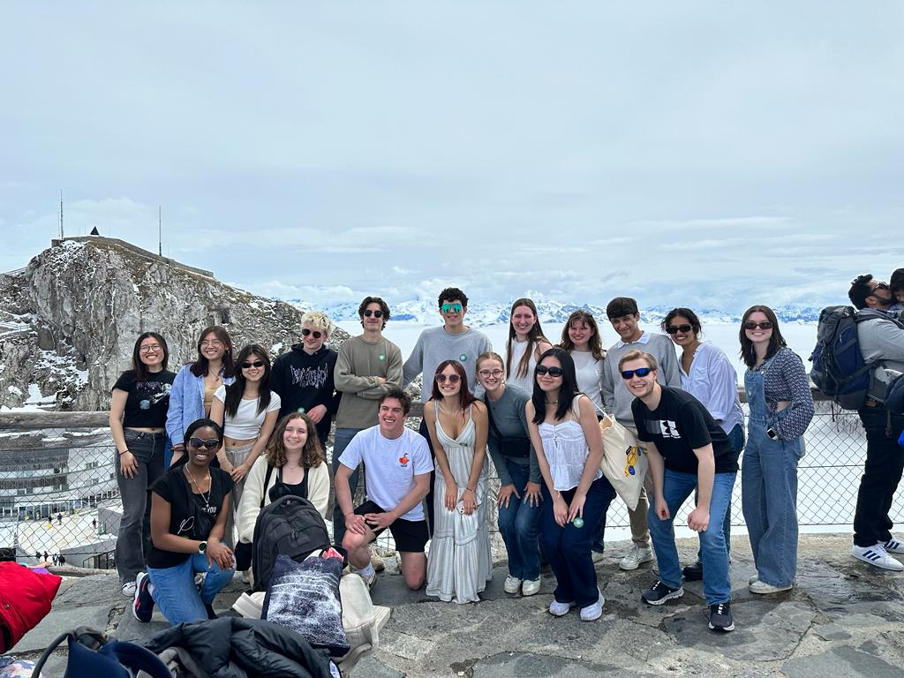

<!DOCTYPE html PUBLIC "-//W3C//DTD HTML 4.01//EN" "http://www.w3.org/TR/html4/strict.dtd">
<html>
<head>
  <meta http-equiv="Content-Type" content="text/html; charset=utf-8">
  <meta http-equiv="Content-Style-Type" content="text/css">
  <title>My test page</title>
  <meta name="Generator" content="Cocoa HTML Writer">
  <meta name="CocoaVersion" content="2113.6">
  <style type="text/css">
  </style>
</head>
<body>
</body>
</html>
<!doctype html>
<html lang="en-US">
  <head>
    <meta charset="utf-8" />
    <meta name="viewport" content="width=device-width" />
    <link href="styles/style.css" rel="stylesheet" />
    <link href ="https://fonts.googleapis.com/css?family=Lato" rel="stylesheet" />
    <title>My test page</title>
  </head>
  <body>
    <h1>Vivian Chong's website</h1>

    

    <p>Hi! My name is Vivian. I'm a 4th year Marketing & Communications student at Northeastern University, 
    originally from Brooklyn, NY. I've created this website to tell you a little bit more about myself, 
    including where I'm from, some of my hobbies and interests, and some other fun facts! </p>

    <p>Besides my majors in marketing and communications, I also have minors in Data Science and
    Interaction Design because of my interests in graphic design, data visualization,
    and UX/UI. I love the intersection between all of the different areas of studies I'm in and
    hope to one day pursue a creative role in marketing, ideally for the entertainment or media industry.</p> 

    <p>I'm a huge music lover. In my free time, you'll find me learning the bass guitar and occasionally
    trying to fix my rusty violin skills (I've played since I was 5!). I also check out live music events
    whenever I can, whether it's watching my friends perform at AfterHours or the house show scene. Besides 
    music, I also love:</p>

    <ul>
      <li>thrifting</li>
      <li>film photography</li>
      <li>ice skating</li>
      <li>traveling</li>
    </ul>

    

    <p>Speaking of traveling, I recently got the opportunity to complete a <strong>Dialogue of Civilizations</strong> 
    in Switzerland, where I got to take graphic design and typography courses while exploring the city of Basel 
    and other parts of the country as well as some parts of France & Germany! I also visited Lisbon, Portugal 
    and Tangier, Morocco after my dialogue. These were some of the coolest experiences I've ever had and I 
    definitely hope to do some more traveling to Europe or Asia once I graduate in May 2024.</p> 

    <p>I hope you enjoyed learning a bit about me and thank you so much for reading!</p>

    <a href = "https://www.linkedin.com/in/">Connect with me on LinkedIn!</a>

    <button>Change user</button>
    <script src="scripts/main.js"></script>
    
  </body>
</html>